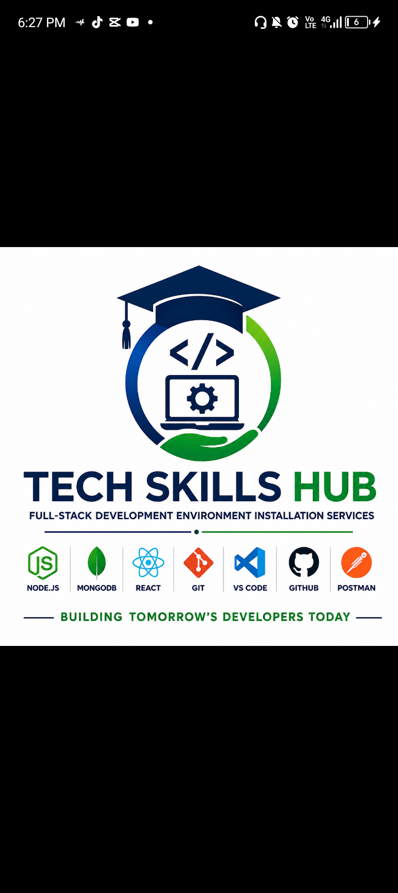

Professional Full-Stack Development Environment Installation Services
We help schools, universities, ICT training centers, businesses, and developers install, configure, and test complete MERN Stack development environments.
Book an InstallationTech Skills Hub specializes in professional software development environment installation for educational institutions, coding bootcamps, businesses, and individual developers.
Our goal is to ensure every student and developer starts with a fully configured, tested, and industry-ready development environment.
Complete installation of Node.js, Express.js, React, MongoDB, npm, and all required developer tools.
Git, GitHub, VS Code, Postman, MongoDB Compass, Chrome and supporting software installation.
Full software installation for schools, universities and ICT training centers.
Verification that every development tool is installed and working correctly.
Bash toolkit for automating software installation and configuration.
Complete Full-Stack development environment configuration.
Professional installation guides, checklists and documentation.
Contact for quotation.
Contact for quotation.
Contact for quotation.
Client testimonials will be published here after successful installation projects.
Founder: Funsho Gbenga Adebayo
Business: Tech Skills Hub
GitHub: adebayofunsho22-dot
Professional installation services for schools, ICT training centers, businesses and developers.